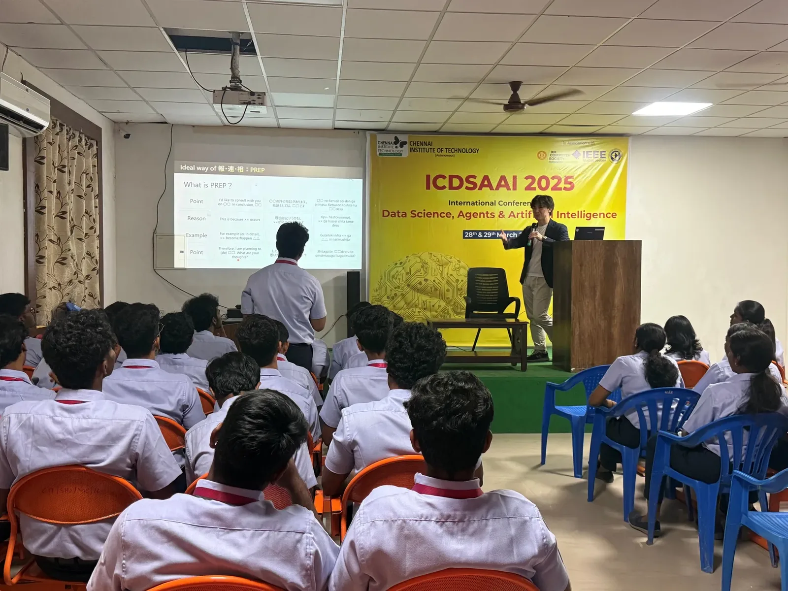
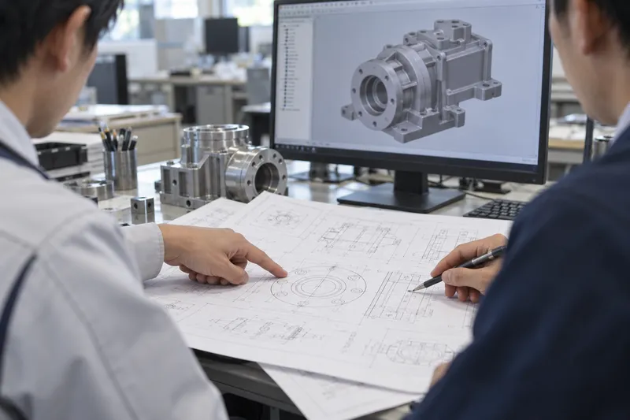
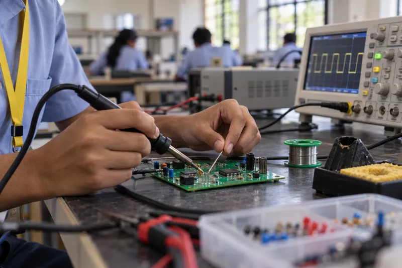

候補者 A（匿名）
- 専攻
- 実データのみ
- 卒業年
- —
- スキル
- —
- 日本語
- —
- 希望職種
- —
Talent
インドの理系大学の学生は、英語で理工系の専門分野を学び、設計ツールやプログラミング言語も英語のまま使っています。専攻ごとの学びと、日本企業での配属例を紹介します。

About
インドは高等教育の規模が大きく、英語で理工系の専門教育を受けた新卒人材を毎年多く輩出しています。日本で働くことに関心を持つ学生も増えています。
〇〇〇〇は、SAP・AWS・CAD・AUTOSARなどのツールや、EV・脱炭素などのテーマに強い人材をご提案しています。国内では採用しづらいスキルを持つ若手と出会える可能性があります。
Problem
インドの理系人材が、採用の候補になる理由は3つあります。

インドの大学生は日本の十数倍の規模で、理工・IT系を学ぶ学生の割合も日本より高くなっています。要確認：数字の出典

理工系の授業や資料の多くは英語で、プログラミング言語や設計ツールも英語のまま使いこなします。

日本の安全さや技術力に関心を持つ学生が増えており、大学の中で日本語教育を行う大学もあります。
Numbers
国内では会えない理系の若手に、
インドの大学で出会う。
Data
数の大きさだけでなく、理工系を学ぶ学生の割合が高いことも、理系の新卒を探す企業にとって大切な点です。
| 項目 | インド | 日本 |
|---|---|---|
| 大学の数（インドは大学とカレッジの合計） | 約50,000校 | 約800校 |
| 理工・IT系学部の割合 | 29% | 18% |
| 大学生の数 | 約4,300万人 | 約263万人 |
| 理系の新卒人材（年間） | 約300万人 | 約11万人 |
インドの「大学の数」は、大学とカレッジを合わせた数です。要確認：定義（出典での集計範囲と、日本の約800校と同じ基準で比べられるか）要確認：出典を記載。現サイト掲載値。インド＝教育省 AISHE、日本＝文部科学省 学校基本調査 で照合のうえ年度を記載

2010年に設立された大学で、大学自身が日本語教育を行っています。在学中に日本語能力試験のN2〜N3相当の力を持つ学生も一定数います。
名古屋工業大学・九州工業大学・関西大学とも提携しています。
Majors
ご提案する学生の専攻は、機械、電気電子、情報、化学・材料などの理系分野です。要確認：専攻の範囲

材料力学・熱力学・機械設計を学び、CAD要確認で図面や部品の形を設計します。
配属例
製品の設計、生産ラインを改善する生産技術

電気回路、機械を思いどおりに動かす制御、電力の仕組みを学びます。EVや脱炭素に関心を持つ学生もいます。要確認：ツール・言語の例
配属例
工場の設備を点検・修理する設備保全、制御設計

プログラミング、データの扱い方、ネットワークの仕組みを学びます。英語の技術文書をそのまま読める学生が多いことも特徴です。要確認：ツール・言語の例
配属例
社内の業務システムを担う社内SE、ソフトウェアの開発
化学反応を工業の規模で扱う化学工学や、材料の性質を学ぶ材料科学を学びます。要確認：ツール・言語の例
配属例
品質を測って保つ品質管理、研究開発
CADは、コンピューターで図面や3次元のモデルを作る設計ツールです。要入力：実際の候補者データと提携大学のカリキュラムにもとづく内容
Skills
国内では採用しづらいツールやテーマに強い若手を、専攻とあわせてご提案します。
| ツール・テーマ | どんなものか |
|---|---|
| SAP | 企業の会計・生産・販売などの情報を一つにまとめて管理する、業務システムの一つです。 |
| AWS | サーバーやデータベースをインターネット経由で使う、クラウドサービスの一つです。 |
| CAD | コンピューターで図面や3次元のモデルを作る設計ツールです。機械や建築の設計で使われます。 |
| AUTOSAR | 自動車の電子制御に使うソフトウェアの共通の決まりごと（規格）です。 |
| EV・脱炭素 | 電気自動車や、二酸化炭素の排出を減らす技術に関わるテーマです。 |

SAPやAWSの上級資格の取得を後押しする大学、AIやサイバーセキュリティに力を入れる大学、EVや脱炭素の研究に強い大学などがあります。
〇〇〇〇は、インド工科大学（IIT）に限らず、こうした大学の学生も対象に候補者を探します。業種とカルチャーの両面で相性のよい大学・人材を、AIによる推奨も活用してご提案します。要確認：AIによる推奨の仕組みの説明
ツールの習熟度は学生ごとに異なります。ご提案の際に、プロフィールと推薦理由で、どのツールをどの程度使えるかをお伝えします。要確認：プロフィールに記載する項目
Verify
書類だけで判断せず、インターンで一緒に働いてから決められます。日本語と職場文化は、入社前に学びます。
専攻や卒業の時期に加えて、使えるツールや日本語のレベル、希望する職種をお伝えします。推薦の理由を添えて、複数の大学から複数名をご提案します。
一緒に働きながら、技術力や職場との相性を確かめます。業務で使う言語は、ご相談の際にすり合わせます。要確認：英語とやさしい日本語を組み合わせて業務を進められるか
内定から入社までの期間に、日本語と日本の職場文化を学ぶ研修を無料で行っています。要確認：無料の条件要入力：入社時点の日本語の目安（N◯程度）
日本語
N5から応用まで、レベルに合わせて学びます。講師は日本語教育サービス「NARAO Nihongo」の、日本人とN1を持つ外国人の混成チームです。
職場文化
代表の〇〇が、外資系コンサルティング会社での経験をもとに設計した講義です。指示以上を先回りして考える働き方などを、具体的な場面で学びます。
N5〜N1は日本語能力試験のレベルで、N5が最も基礎、N1が最も高いレベルです。
Difference
学ぶ言語、日本語の習熟度、卒業の時期、在留資格の手続きなどが異なります。違いを知っておくと、配属や育成の計画を立てやすくなります。
| 項目 | インドの理系新卒 | 日本の理系新卒 | 採用で考えておくこと |
|---|---|---|---|
| 専門分野を学ぶ言語 | 授業や資料の多くが英語 | 主に日本語 | 英語の資料やツールを使う業務から任せやすい |
| 日本語 | 個人差がある要確認：インターン時点の日本語レベルの目安（現サイトでは「そこそこ」）。入社前に研修で学ぶ | 母語 | 業務で必要な日本語のレベルを職種ごとに整理する |
| 卒業の時期 | 国内の学年暦とは異なる要確認：主な連携大学の卒業時期 | 3月卒業が一般的 | 国内の新卒とずらして採用の計画を立てられる |
| 選考の進め方 | 〇〇〇〇ではインターンで一緒に働いて見極める | 面接を中心に選考する企業が多い | 評価の観点と、インターンで任せる業務を決めておく |
| 働くための手続き | 在留資格の手続きが必要 | 不要 | 手続きの期間を見込んで入社時期を決める |
| 生活の準備 | 来日と住まいの準備が必要 | 多くは国内で完結 | 住まいや生活の立ち上げの分担を決める要確認：〇〇〇〇の担当範囲 |
大きな違いは、専門分野を英語で学んでいることです。業務で使う専門用語は、入社後のOJTとあわせて身につけていく前提で計画すると、受け入れの準備を進めやすくなります。
国内の採用活動と時期をずらして候補者を探せます。内定辞退の補充や、通年での採用を考える企業にも検討しやすい選択肢です。
FAQ
専攻によって異なりますが、機械工学ではCADを使った設計、情報工学ではプログラミングやネットワークなどを学んでいます。SAP・AWS・CAD・AUTOSARなどのツールや、EV・脱炭素などのテーマに強い人材もいます。理工系の授業や資料の多くは英語のため、ツールも英語のまま使いこなします。
はい。〇〇〇〇は、IITだけでなく、専門分野に強い理系大学を含むインド各地の大学から候補者を探します。SAPやAWSの資格取得を後押しする大学、AIやサイバーセキュリティに力を入れる大学など、大学ごとに強みが異なります。要入力：公開できる連携大学の一覧
機械、電気電子、情報、化学・材料などの理系専攻の学生です。要確認：専攻の範囲採用したい職種をお伺いし、合う専攻の学生をご提案します。
日本語のレベルには個人差があります。要確認：インターン時点の日本語レベルの目安（現サイトでは「そこそこ」）内定から入社までの期間に日本語の研修を行います。大学の中で日本語教育を行う大学もあり、在学中にN2〜N3相当の学生がいる大学もあります。
理工系の専門分野を英語で学んでいるため、英語の技術資料を読んだり、英語のツールを使ったりする業務は任せやすい傾向があります。インターンの業務で使う言語は、ご相談の際にすり合わせます。要確認：英語とやさしい日本語を組み合わせて業務を進められるか